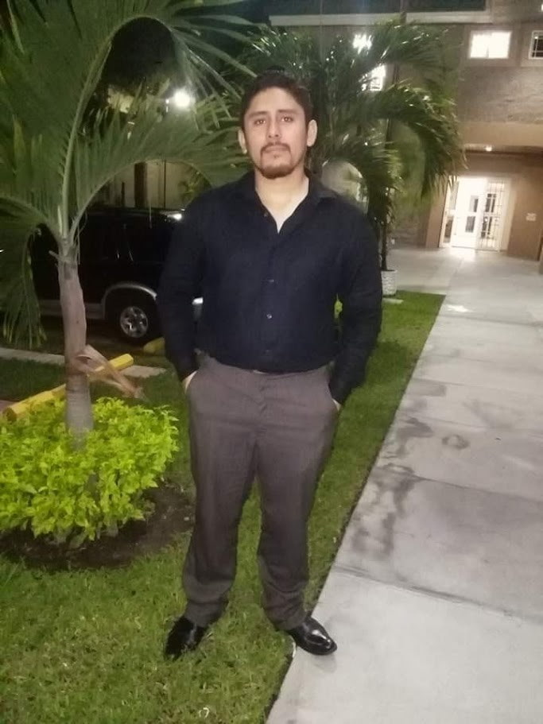
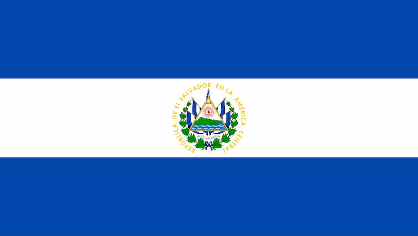

Cesar Gregorio Carpio Lopez
About Me
Welcome! I'm Cesar Carpio from El Salvador. I'm passionate about welding and electrical systems, and I love learning new tools and technologies to grow as a professional. I'm excited to take this web development course to advance my career in Software Development. This course will help me to improve so many things about websites and their structures. I'm looking fordward to learn so much about JavaScript and how to apply it in my futures applications.
San Salvador, El Salvador
Historically founded on June 12th 1824, San Salvador's department has always been the political, cultural, and economic heart of the country. Located centrally-west, the central city, San Salvador also functions as the nation's capital and a lively cultural hub. The area displays a mix of old ways and forward-thinking progress. Its agriculture produces beans, coffee and sugarcane while it serves as a central point for crucial financial bodies plus significant communication and power companies.